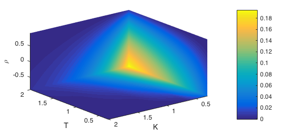

Problem formulation and model
We model the price processes of two stocks in the two-dimensional Black-Scholes model [1] as solutions of the following stochastic differential equations:
$$ dS_1/S_1 = (r - 0.5 \sigma_1^2) dt + \sigma_1 dW^1_t $$
$$ dS_2/S_2 = (r - 0.5 \sigma_2^2) dt + \sigma_2 dW^2_t, $$
where $W^1_t$ and $W^2_t$ denote Brownian motions/Wiener processes with correlation $\rho$.
We are interested in pricing spread options. These are important instruments on several markets such as on equity, fixed income, foreign exchange, commodities, or energy markets, see [2]. In particular, when prices of spread options are used to fit model parameters, fast and accurate pricing methods are called for.
Payoff of a spread option with strike price $K$ and maturity $T$ is
$$ \mbox{payoff} = \max \{ S_1(T) - S_2(T) - K, 0 \}. $$
Using risk-neutral valuation, the price of the spread option is given by the following expectation:
$$ spread_{price} = \exp(-r T) E[\max \{ S_1(T) - S_2(T) - K, 0\}]. $$
In order to compute the price of the spread option in the Black-Scholes model, the expected value, a two-dimensional integral, needs to be evaluated. This is considerably more time-demanding than pricing one-dimensional plain vanilla options with the famous and explicit Black-Scholes formula. For model calibration (parameter fitting) one determines the parameters $\sigma_1$ and $\sigma_2$ from plain vanilla options that only involve either stock 1 or stock 2. The spread option prices then can be used to determine the parameter $\rho$.
During the model calibration, for fixed $\sigma_1$ and $\sigma_2$, interest rate $r$ and initial stock prices $S_1(0)$ and $S_2(0)$, the spread option prices need to be evaluated for a set of maturities $T$ and strikes $K$, and different parameters $\rho$.
Our approach is to interpret $spread_{price}$ as a function of the three model parameters $T$, $K$ and $\rho$ and use 3D Chebyshev interpolation of these parameters [3].
We first specify the fixed parameters
S01 = 1; % initial value of stock 1
S02 = 1; % initial value of stock 2
r = 0; % interest rate
x01 = log(S01);
x02 = log(S02);
sig1 = 0.3; % model parameter sigma_1
sig2 = 0.3; % model parameter sigma_2
%
% Parameter domain for T x K x rho:
%
T_min = 0.3;
T_max = 2;
K_min = 0.3;
K_max = 2;
rho_min = -0.9;
rho_max = 0.9;
dom = [T_min, T_max, K_min, K_max, rho_min, rho_max];
%
% Definition of problem dependent functions:
%
payoff = @(K, x1, x2) max(exp(x01+x1) - exp(x02+x2)-K, 0);
normdensity_2d = @(sig1, sig2, rho, x1, x2, mu1, mu2) (1./(sqrt((sig1.^2) .* ...
(sig2.^2).*(1-rho.^2)).*2.*pi)).*exp(-0.5*(1./((sig1.^2).*(sig2.^2).*...
(1-rho.^2))).*(((sig2.^2).*(x1-mu1).^2)-2.*rho.*sig1.*sig2 .* ...
(x1-mu1).*(x2-mu2)+(sig1.^2).*(x2-mu2).^2));
integrand = @(T, K, rho, x1, x2) payoff(K,x1, x2) .* ...
normdensity_2d(sig1.*sqrt(T), sig2.*sqrt(T), rho, x1, x2, (r-0.5.*sig1.^2).*T, (r-0.5.*sig2.^2).*T);
%
% Derivation of two-dimensional integral/expectation via 2D Clenshaw-Curtis quadrature:
% (We choose a grid of 150x150 quadrature points. For higher accuracy,
% more points need to be chosen.)
%
ff1 = @(T, K, rho, x1, x2) integrand(T, K, rho, x1, x2);
[xx, wx] = chebpts(150, [-10, 10]);
[yy, wy] = chebpts(150, [-10, 10]);
[xx2, yy2] = meshgrid(xx, yy);
pricetmp2d = @(T, K, rho) wy * feval(ff1, T, K, rho, xx2, yy2) * wx';
price = @(T, K, rho) exp(-r.*T) .* pricetmp2d(T, K, rho);
price is a 3D function that returns the spread option price based on the three parameters $T$, $K$ and $\rho$.
Calling the Chebfun3 constructor
Here, we set the tolerance to $10^{-5}$ (This is done for speed. With the default tolerance, this example would take a factor of 10 times longer. See Subsection 18.10 of the Chebfun Guide.) The run-time of the constructor scales linearly with the run-time of the bivariate integration. The longer this step takes, the higher the expected efficiency gain of the interpolation.
tic chebPrice = chebfun3(price, 'eps', 1e-5, 'vectorize', dom) toc
chebPrice = chebfun3 object cols: Inf x 5 chebfun rows: Inf x 10 chebfun tubes: Inf x 7 chebfun core: 5 x 10 x 7 length: 10, 42, 13 domain: [0.3, 2] x [0.3, 2] x [-0.9, 0.9] vertical scale = 0.19 Elapsed time is 38.815439 seconds.
Let's plot the function at three slices $T = 2$, $K = 0.3$, and $\rho = -0.9$:
slice(chebPrice, 2, 0.3, -0.9)
campos([-10 10 10])
xlabel('T'), ylabel('K'), zlabel('\rho')

Checking the error
Finally, we evaluate both the function handle and the corresponding chebfun3 object. We observe a considerable gain in efficiency: Evaluation of the chebfun3 object is hundreds times faster than evaluation of the function handle.
M = 15;
T = linspace(dom(1), dom(2), M);
K = linspace(dom(3), dom(4), M);
rho = linspace(dom(5), dom(6), M);
V = zeros(M, M, M);
tic
for i =1:M
for j=1:M
for k=1:M
V(i,j,k)=price(T(i), K(j), rho(k));
end
end
end
format short
time_price = toc
[xx,yy,zz] = ndgrid(T, K, rho);
tic
VCheb = chebPrice(xx,yy,zz);
time_ChebPrice = toc
err = V - VCheb;
err = max(abs(err(:)))
time_price =
2.0692
time_ChebPrice =
0.0076
err =
2.5650e-04
References
-
F. Black and M. Scholes, "The pricing of options and corporate liabilities", Journal of Political Economy 81 (1973), 637--654.
-
R. Carmona and V. Durrleman, "Pricing and Hedging Spread Options", SIAM Review 45 (2003), 627--685.
-
M. Gass, K. Glau, M. Mahlstedt and M. Mair, "Chebyshev interpolation for parametric option pricing", working paper, 2016, http://arxiv.org/abs/1505.04648.